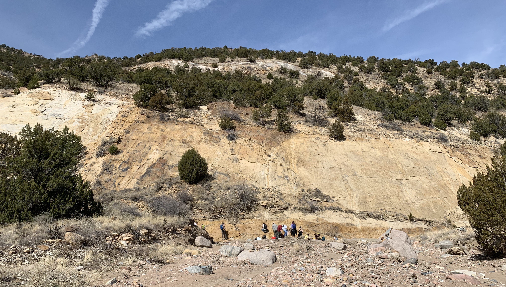
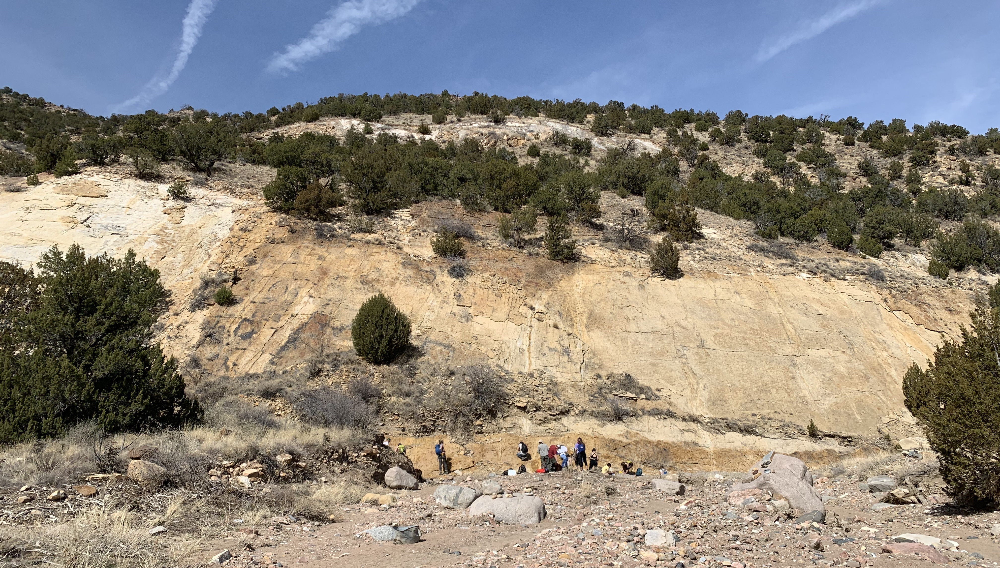

Quantitative, experiential learning in the Geosciences
Teaching geology at the undergraduate level has been an integral part of my graduate school experience. I have TAed Structural Geology (3 times), Mineralogy, and Ways of Knowing in the Sciences at UW-Madison. In 2016, I was an instructor on a 10 Week field program in New Zealand run by Carleton College. Most recently, I was a visiting instructor for Structural Geology at Colorado College.
The ability to think like a geoscientist is increasingly important in our society. The global challenges of this century--climate change, water scarcity, stress on our food system--are almost all geologically related. Through teaching in the classroom, in the field, and by involving students in active research, I hope to educate the next generation of global citizens in our deeply interconnected Earth system.
I use a quantitative, data-driven approach to teaching that gets students working with real geologic data, interracting with physical phenomena in activities and labs, and collecting and analyzing the geologic records on field trips. I hope students leave my classes with a firm understanding how we observe our world, go about analyzing data, and making well-supported interpretations.